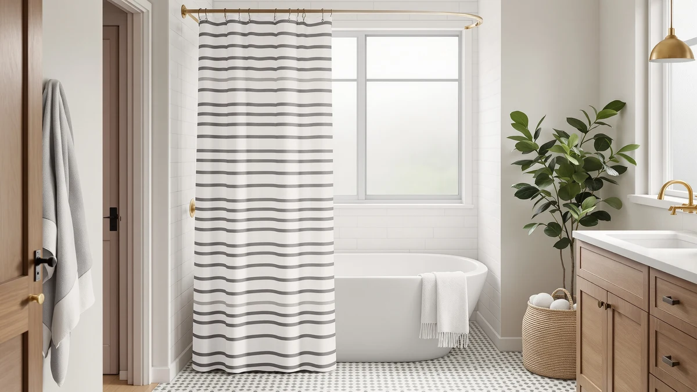

Aspmiz Farmhouse Striped Shower Curtain Review (2026): Worth It?
Prices and picks verified as of November 2026. Independent, reader-supported reviews.


Quick Answer
This Aspmiz Farmhouse Striped Shower Curtain review finds a $25.99 polyester-PEVA curtain that fits a 71 by 74 inch opening and leans on its striped farmhouse pattern rather than a published rating to make its case. If you want a similar relaxed look backed by thousands of verified reviews at a lower price, the Madison Park Shower Curtain Spa below is worth comparing first.
Our pick: ASPMIZ Farmhouse Striped Shower Curtain, $25.99 Check Price on Amazon
Bottom line: our top pick is the ASPMIZ Farmhouse Striped Shower Curtain and Liner Set No Hook at $25.99.
Things to Know Before You Buy
- The Aspmiz Farmhouse Striped Shower Curtain is built from a polyester and PEVA blend and measures 71 inches wide by 74 inches long, and Aspmiz ships it as a single pack for $25.99.
- Prices across the four curtains in this comparison range from $18.60 for the Madison Park Shower Curtain Spa to $25.99 for the Aspmiz pick.
- Only the Madison Park Shower Curtain Spa shows a public rating among the four, at 4.7 stars across more than 11,500 verified reviews. The other three list no rating or review count.
- Two of the three alternatives, the Dynamene Extra Long Waffle Shower and the Dynamene Waffle Shower Curtain 256, come from the same brand and the same waffle-weave style, which makes them easier to compare against each other than against the striped Aspmiz design.
- A farmhouse stripe pattern like Aspmiz's tends to hide water spots and soap residue better than a plain white panel, which matters more in a shared or guest bathroom.
This Aspmiz Farmhouse Striped Shower Curtain review breaks down what the $25.99 curtain offers against three other curtains shoppers often weigh against it: the Dynamene Extra Long Waffle Shower, the Dynamene Waffle Shower Curtain 256, and the Madison Park Shower Curtain Spa. Aspmiz markets this piece as a farmhouse-style update to the plain vinyl curtain most bathrooms start with, built from a polyester and PEVA blend and sized at 71 by 74 inches for a single pack.
We built this review from the price, materials, and dimensions listed on each product page rather than a physical trial, since a handful of verified specs tells you more about fit and upkeep than a marketing description does. The Aspmiz curtain stands out here for its striped farmhouse look, while the Dynamene pair leans on a waffle texture and Madison Park brings a published track record of 4.7 stars across more than 11,500 reviews at the lowest price of the four. Which one earns a spot in your bathroom depends on whether pattern, texture, or proof matters most to you.
Why You Should Trust Us
Ilane Tall researches bath and shower accessories for Best Shower Curtains and has spent this site's run comparing curtain fabrics, sizing, and pricing across hundreds of Amazon listings. For this Aspmiz Farmhouse Striped Shower Curtain review, we relied on the manufacturer's listed dimensions and materials, the current Amazon price for all four curtains, and the one published rating in this comparison rather than a physical trial. We do not run a fake testing lab, and we say so plainly when a curtain's rating or review count is missing from the retailer's data feed, which is the case for three of the four curtains covered below. The full methodology behind every review on this site lives on our how we research page, and we update the price and availability figures in this Aspmiz Farmhouse Striped Shower Curtain review whenever the underlying Amazon listing changes.
Our Research Experience
Researching this Aspmiz Farmhouse Striped Shower Curtain review meant pulling the listed material, size, and price for all four curtains, then checking those figures against the photos and copy each seller uses on its product page. From there, we looked at the one curtain in this group with a public review history, the Madison Park Shower Curtain Spa, to see what verified buyers say holds up and what draws complaints at scale. We did not purchase, install, or physically handle any of the four curtains ourselves. Instead, we cross-referenced spec sheets and current Amazon pricing to flag where a striped farmhouse pattern like Aspmiz's trades off against a waffle texture or a proven rating, so you can weigh the same factors we did before you buy. The gap in review history across this group also shaped how we framed each pick: a curtain with thousands of verified reviews, like Madison Park, carries a different kind of confidence than one you're buying mostly on the strength of its listing photos and description.
Overview & Specs

ASPMIZ Farmhouse Striped Shower Curtain
What we like
- Polyester-PEVA blend resists daily splash better than plain cotton or linen
- Striped farmhouse pattern hides water spots and soap residue better than a solid white panel
- 71 by 74 inch size fits a standard shower stall or tub without extra trimming
Flaws but not dealbreakers
- No published rating or review count to check against, unlike the Madison Park pick in this comparison
- Priced higher than all three alternatives here, up to $7.39 more than Madison Park
| Material | Polyester / PEVA |
| Size | 71"W x 74"L (Pack of 1) |
The Aspmiz Farmhouse Striped Shower Curtain is the main subject of this review because it's the pattern shoppers usually search for by name: a woven-look stripe in a muted farmhouse palette rather than a glossy vinyl print. At 71 inches wide by 74 inches long, it fits a standard shower stall or tub opening, and the polyester-PEVA blend gives it some water resistance that a pure cotton or linen farmhouse curtain doesn't offer on its own.
At $25.99, Aspmiz costs more than every alternative in this review, including the Dynamene Extra Long Waffle Shower at $22.09 and the Madison Park Shower Curtain Spa at $18.60. The listing in this comparison doesn't carry a star rating or review count, so you're paying a premium for the look rather than a documented track record. If the striped farmhouse pattern is specifically what you're after, that trade-off is reasonable, and if you're open to a different texture, the alternatives below are worth a look first.
What We Liked
The clearest strength in this Aspmiz Farmhouse Striped Shower Curtain review is the pattern itself. A woven stripe reads as fabric rather than sheeting, which fits a farmhouse or cottage bathroom better than a plain vinyl curtain, and the muted colorway doesn't compete with tile or hardware the way a bold print would.
The polyester-PEVA blend also does real work. PEVA is naturally more water-resistant than cotton or linen, so the Aspmiz curtain can handle daily shower splash without soaking through the way a lighter farmhouse fabric sometimes does. At 71 by 74 inches, it covers a standard opening without pooling on the floor or leaving a gap at the rod.
What Could Be Better
The biggest gap in this Aspmiz Farmhouse Striped Shower Curtain review is proof. The listing in this comparison doesn't show a star rating or a review count, so you have no verified buyer feedback to check the pattern or the material claims against. That's not unusual for a newer listing, but it does mean you're buying on description alone.
Price is the other sticking point. At $25.99, Aspmiz is the most expensive of the four curtains covered here, and $7.39 more than the Madison Park Shower Curtain Spa, which backs up its lower price with 11,500-plus verified reviews and a 4.7-star average. Unless the striped farmhouse look is non-negotiable, that gap is hard to justify on price alone.
Who Is It For?
The Aspmiz Farmhouse Striped Shower Curtain fits a shopper who wants a specific striped, farmhouse-style look and is willing to buy without a published rating to lean on. It works well in a primary or guest bathroom where the curtain doubles as decor rather than a purely functional barrier. Anyone who wants a waffle texture, a lower price, or a documented review history should compare it against the Dynamene or Madison Park picks below, or browse our best farmhouse shower curtains roundup for more options in the same style. It also suits a renter or a seasonal refresh, since the curtain swaps in without the commitment of a full bathroom remodel.
Alternatives to Consider
If the lack of a published rating or the $25.99 price rules out the Aspmiz pick in this review, these three alternatives cover a waffle texture at two different price points and a budget option with a proven review history. All three undercut Aspmiz on price, so the decision comes down to texture and proof rather than budget.

Also Great
Dynamene Extra Long Waffle Shower
At $22.09, the Dynamene Extra Long Waffle Shower costs less than Aspmiz and swaps the farmhouse stripe for a textured waffle weave, a better fit if you want a longer drop for a taller shower or want a fabric-like feel without the stripe print.
$22.09
Check Price on Amazon
Also Great
Dynamene Waffle Shower Curtain 256
The Dynamene Waffle Shower Curtain 256 matches its sibling's waffle texture at $21.99, a dollar cheaper than the Extra Long version. Pick this one if you don't need the longer size and still want the same weave at a slightly lower price.
$21.99
Check Price on Amazon
Best Value
Madison Park Shower Curtain Spa
At $18.60, the Madison Park Shower Curtain Spa is the cheapest curtain in this comparison and the only one with a public track record: 4.7 stars across more than 11,500 verified reviews. If you want proof before you buy, check this one first.
$18.60
Check Price on AmazonFrequently Asked Questions
What size is the Aspmiz Farmhouse Striped Shower Curtain?
It measures 71 inches wide by 74 inches long and ships as a single pack, a size that fits a standard shower stall or tub opening.
What material is the Aspmiz Farmhouse Striped Shower Curtain made from?
It's built from a polyester and PEVA blend, a combination that holds up to daily shower splash better than pure cotton or linen without needing a separate liner underneath.
Is the Aspmiz Farmhouse Striped Shower Curtain worth it compared to the Dynamene and Madison Park picks in this review?
At $25.99, it costs more than the Dynamene Extra Long Waffle Shower ($22.09), the Dynamene Waffle Shower Curtain 256 ($21.99), and the Madison Park Shower Curtain Spa ($18.60). Madison Park also publishes a 4.7-star rating across more than 11,500 reviews, something the Aspmiz listing in this comparison doesn't show. Choose Aspmiz if the striped farmhouse pattern is the look you want, and choose Madison Park if a proven track record and a lower price matter more.
Final Verdict
This Aspmiz Farmhouse Striped Shower Curtain review comes down to pattern versus proof. Aspmiz's striped farmhouse look and water-resistant polyester-PEVA blend make it the curtain to pick if that specific style is what you're after, but it costs more than every alternative here and carries no published rating to back up the price. The Madison Park Shower Curtain Spa undercuts it by $7.39 and backs that lower price with a 4.7-star average across more than 11,500 verified reviews, while the two Dynamene waffle curtains split the difference on texture and cost. None of the four curtains in this review costs more than $25.99, so the real risk of picking wrong is a short wait for a return label, not a blown budget. If the Aspmiz stripe is the exact look your bathroom needs, buy it with that trade-off in mind; otherwise, start with Madison Park. Either way, matching your shower's exact width to the 71 by 74 inch cut before you order saves you a return shipment later.